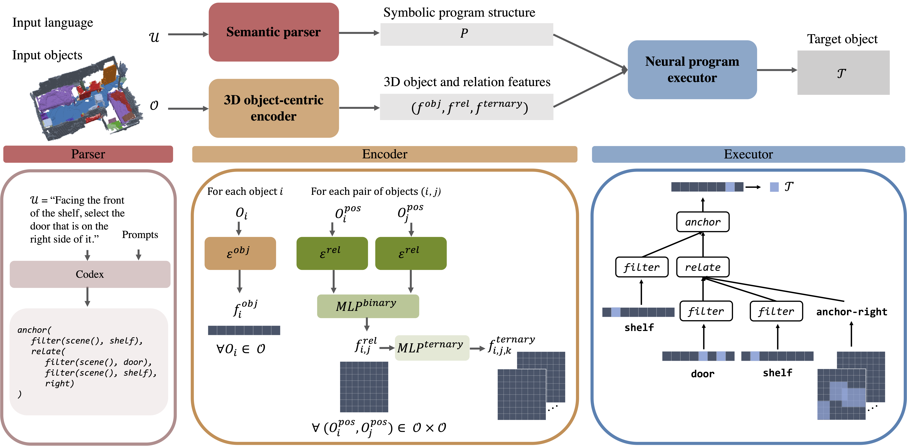
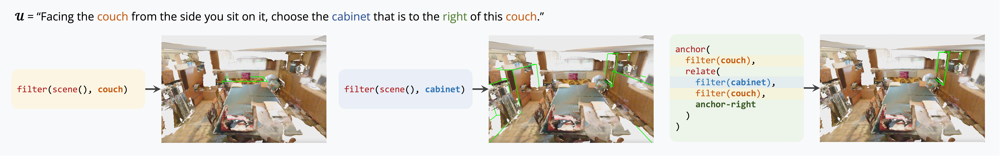

NS3D: Neuro-Symbolic Grounding of 3D Objects and Relations
CVPR 2023

Abstract
Grounding object properties and relations in 3D scenes is a prerequisite for a wide range of artificial intelligence tasks, such as visually grounded dialogues and embodied manipulation. However, the variability of the 3D domain induces two fundamental challenges: 1) the expense of labeling and 2) the complexity of 3D grounded language. Hence, essential desiderata for models are to be data-efficient, generalize to different data distributions and tasks with unseen semantic forms, as well as ground complex language semantics (e.g., view-point anchoring and multi-object reference). To address these challenges, we propose NS3D, a neuro-symbolic framework for 3D grounding. NS3D translates language into programs with hierarchical structures by leveraging large language-to-code models. Different functional modules in the programs are implemented as neural networks. Notably, NS3D extends prior neuro-symbolic visual reasoning methods by introducing functional modules that effectively reason about high-arity relations (i.e., relations among more than two objects), key in disambiguating objects in complex 3D scenes. Modular and compositional architecture enables NS3D to achieve state-of-the-art results on the ReferIt3D view-dependence task, a 3D referring expression comprehension benchmark. Importantly, NS3D shows significantly improved performance on settings of data-efficiency and generalization, and demonstrate zero-shot transfer to an unseen 3D question-answering task.
NS3D execution trace

Code release
We release code for NS3D here. Thanks!